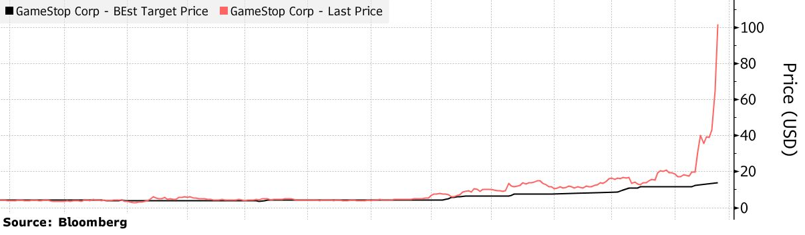

|
January 28, 2021 What is happening with GameStop The word "short squeeze" was once arcane stock-market jargon. It is everywhere in the news today. While the media are reporting on the intricacies of the short squeeze of the video game retailer GameStop and are speculating on the emergence of a flash mob vs Wall Street movement, in this article I explain simply how a short squeeze works. And if you wonder whether you should buy GameStop now, I offer my perspective on the question at the end of the article. The facts: The stock price of the video game retailer GameStop has been multiplied by ten in the course of a week as a result of a short squeeze coordinated on Reddit. To understand what a short squeeze is, we first need to understand short-selling. Short-selling is a strategy employed by hedge funds when they believe the stock of a company is over-valued. It works schematically as follows: Day 0: A hedge fund thinks that a stock is overvalued. To fix ideas, let's say the price is $40 and the hedge fund estimates the fair value at $20. The fund borrows the stock from a broker with the promise to return the stock on Day 3. The fund sells the borrowed stock at $40. The hedge fund bets on the fact that other investors will soon realize that the stock is over-valued and when it happens the price will drop. Short-sellers sometime announce publicly their short positions and explain why they are convinced the stock is over-valued in order to accelerate the price correction. Day 3: If the price has dropped, say to $25, the short-seller buys back the stock at $25 and returns it to the broker. The short-seller has earned $15. If the price is still around $40, the short-seller asks the broker to rollover the stock loan for another three days. The broker usually says ok. Day 6: Same as Day 3. And so on until the price drops or the short-seller gives up on its bet. Note that if the price increases, say to $50, and the short-seller closes its short position, the short-seller loses money because it buys back at $50 and thus loses $10. Short positions can exceed the outstanding amount of shares! Suppose there are 100 shares of the company. They are held by investors and deposited with a broker. Short-sellers come in, borrow 70 shares from the broker and sell them in the market to investors (who may be the same investors as the initial ones or other investors, it does not matter.) Investors' shares are deposited with the broker, who lends 70 shares to short-sellers (who may be the same short-sellers are before or different ones, it does not matter.) There are now 140 shorted shares even through the number of shares outstanding is only 100. This example describes roughly the situation of GameStop in the run-up of the short squeeze. The stock price was around $40 and 140% of GameStop's shares had been sold short. A short squeeze is when short-sellers lose their shirt. What happened? Individual investors on a Reddit forum coordinated a short squeeze. A short squeeze happens when the price increases while there are large short positions. A large price increase prompts short-sellers to close their short positions. For one, short-sellers may prefer to take a loss and avoid the risk of losing more. In addition, brokers who lent the stock to the short-sellers can refuse to rollover the stock loan because they are worried of the short-seller defaulting if the price increases further. Short-sellers must buy the stock to close their short positions. But when they need to buy 140% of the total supply of shares, it generates a massive price pressure, driving the price up, possibly to very high levels. GameStop's price reached $500 today, up from $40 one week ago. Retail investors on Reddit coordinated to buy GameStop's shares to trigger a price increase. Some short-sellers start to close their positions and seek to buy back the stock. But if individual investors are buying at the same time, short-sellers have a hard time closing their positions and the price increases quickly, prompting other short-sellers to close their position, which further pushes the price up, and so on. Short-sellers become desperate to close their positions and when they do so they lose money. Short-sellers are squeezed. How will this end? The most likely scenario is that some short-sellers close their positions at a high price and lose money. The price will eventually go back to a level closer to the pre-squeeze price. Individual investors who bought in the run-up of the squeeze and sell to hedge funds during the squeeze at a high price will make money. Individual investors who buy now that the price is high, hoping to take advantage of short-sellers, are doing something very risky: When the squeeze ends, the price drops, and those who bought high lose. |